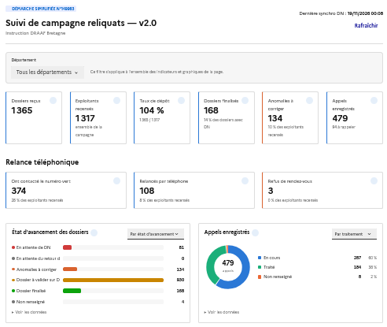

BRETAGNE Direction régionale de l'alimentation,
de l'agriculture et de la forêt
Campagne de mesure des reliquats azotés en Bretagne
Agriculteurs
- Reçoit un courrier avec son code unique
- Ouvre une démarche déjà pré-remplie (données administratives et PAC)
- Vérifie et complète uniquement les champs manquants
- Appelle le numéro vert en cas de difficulté
- Phase 2 : accueille le préleveur sur sa parcelle
Code unique reçu par courrier
Numérique
Démarche régionale pré-remplie grâce au code unique
DRAAF · instruction et cellule numéro vert
Accède aux dossiers et aux données agricoles et administratives pour aider les agriculteurs et piloter la campagne
Exploitants identifiés, parcelles, PAC, code unique
Auto-remplissage des données administratives et cultures
Les réponses reviennent automatiquement dans Grist
PACAGE, raison sociale, SIRET…

Saisis / attendus, par département

Développements spécifiques : effectué, programmé, à faire
Préleveurs et
laboratoires
Phase 2 : visibilité sur les prélèvements effectués, programmés et à faire
Phase 1 · Campagne Démarche Numérique
1 courrier → 2 pré-remplissage → 3 saisie par l'agriculteur → 4 retour dans Grist, avec 5 le numéro vert en parallèle et 6 le pilotage DRAAF
Phase 2 · Prélèvements
7 Calendrier et carte partagés entre laboratoires et DRAAF
identifiés
sur DN
numéro vert